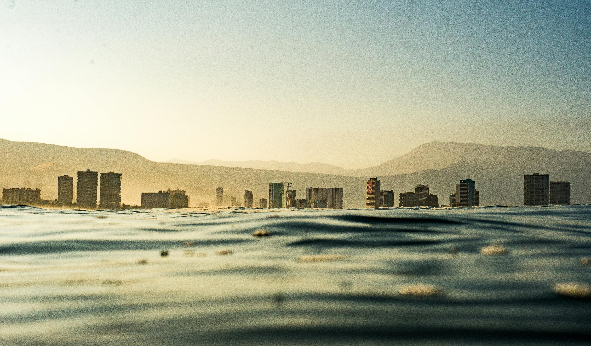
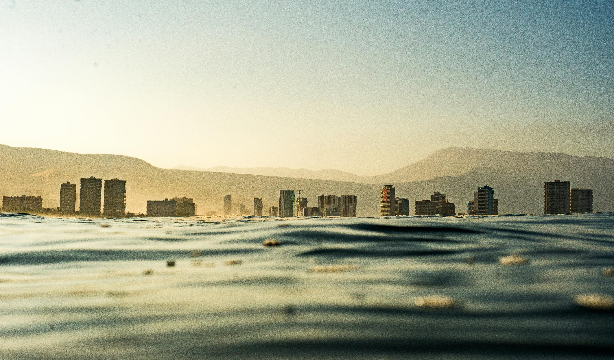

El problema en nuestro país
La contaminación ambiental es un desafío significativo en Perú, afectando a nuestras ciudades, ríos y biodiversidad. Desde la contaminación del aire en grandes metrópolis como Lima hasta la degradación de ecosistemas marinos por plásticos, el problema requiere nuestra atención y acción.
Imágenes que inspiran a la acción
 


Cómo podemos ayudar
- Reducir, reutilizar y reciclar.
- Participar en campañas de limpieza.
- Informar a otros sobre el impacto ambiental.